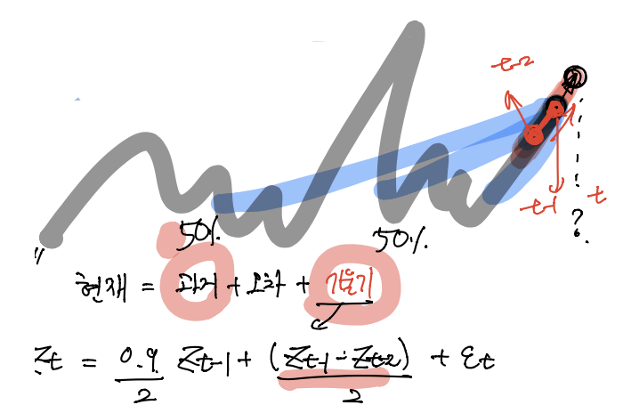

5.2.1 White noise
\(\{\epsilon_t\}\) is white noise iff1. \(\epsilon_t \overset{\text{i.i.d.}}{\sim}(\mu,\sigma^2)\) for all \(t\).
회귀분석에서는 보통 normal 가정을 하는데2 여기서는 normal 가정이 필요 없다. (uniform이나 다른 가정 가능)
- 특징
for all \(t\) \(\quad E(\epsilon_t)=\mu, V(\epsilon_t)=\sigma^2\)
for all \(l\geq 0\) \(\quad \text{Cov}(\epsilon_{t-l},\epsilon_t)=0\) 여기서 \(l\)은 lag의 약자.
\(\Rightarrow\) Stationary Process3
히스토리를 보면 왜 당연한건지 알 수 있다. i.i.d.인 경우에는 에르고딕 성질이 있다..iid는 너무 강한 조건이니까 약한 조건을 찾다 약화시키고 약화시키다보니 Stationary Process가 되었다. 그러니까 당연히 iid는 stationary가 된다.
5.2.2 random walk process
\(\{Z_t\}\) is random walk process \(\Leftrightarrow\) \(Z_t = Z_{t-1} + \epsilon_t, \quad \epsilon_t\sim (0,\sigma^2)\)
쉽게말해, 현재 상태를 이전상태와 오차와의 합으로 표현할 수 있는 프로세스. 상당히 유용한 모델입니다.
- 특징: 합리적이고, 실용적인듯함.
- 현재 = 과거 + 오차 (=랜덤한 변동)
- \(Z_t = Z_{t-1} +\) 변동
- 단점: 쓸모가 없다. <- non-stationary 모델이기 때문에
(1) 처음을 \(t\)시점으로 두고 \(-\infty\)로 보내는 방법
\(Z_t = Z_{t-1} + \epsilon_t \quad \epsilon_t\sim (0,\sigma^2)\)
\(\space\quad=Z_{t-2} + \epsilon_{t-1} + \epsilon_{t}\)
\(\space\quad=Z_{t-3} + \epsilon_{t-2} + \epsilon_{t-1} +\epsilon_{t}\)
\(\space\quad\quad\quad \vdots\)
\(\space\quad=\epsilon_{t} + \epsilon_{t-1} + \epsilon_{t-2} + \epsilon_{t-3} + \dots + Z_{-\infty}\)
\(V(Z_t) = \sigma^2 + \sigma^2 + \sigma^2 + \dots = \infty\)
편의상 \(Z_{-\infty}\)를 \(0\)이라고 놨지만, 엄밀하게 따지면 \(Z_{-\infty}\) 값이 존재합니다.
분산이 무한대니까 stationary가 아닙니다. \(t\)에 depend하는 것을 따지기 전에 우선 분산이 finite해야 해요. finite한 상태에서 \(t\)에 depend하면 stationary가 안되겠죠?
그래서 이 모델은 분산이 무한대이니까 stationary가 안되고 그래서 쓸모가 없는 모델이 됩니다. \(\to\) 그래서 예측할 때 잘 안씁니다.
(2) 0시점을 시작점으로 고정하고 \(+\infty\)로 보내는 방법
\(Z_t\)를 시작, \(Z_{-\infty}\)를 끝이라고 생각해서 푼것이 위에 식이라면, 시작과 끝을 바꿔서 생각하면 \(y_0 = Z_{-\infty}=0\)4
- \(y_0 = 0\)
- \(y_1 = y_0 + \epsilon_1\)
- \(y_2 = y_1 + \epsilon_1 + \epsilon_2\)
- \(y_3 = y_0 + \epsilon_1 + \epsilon_2 + \epsilon_3\)
- \(\dots\)
- \(y_t = y_0 + \epsilon_1 + \dots + \epsilon_t = \sum_{i=1}^t \epsilon_i \Rightarrow V(y_t) = t\sigma^2\)
\(t\to \infty\) 이므로, 결국 \(t\sigma^2\to \infty\)
이것이 교재의 논리이고, 결국 위에서의 논리와 일치한다. (시작과 끝을 어디로 놓던지 상관없다. 단지 아래와 같이 생각한다면 \(t\)시점을 무한대로 보내줘야 한다는 차이가 존재함.)
5.2.5 auto-regressive process (AR)
\(\{Z_t\}\) is auto regressive process iff.
\(Z_t = \phi_1 Z_{t-1} + \phi_2 Z_{t-2} + \phi_3 Z_{t-3} + \dots + \phi_p Z_{t-p} + \epsilon_t\)
motive1 : 과거의 값에 계수값 반영
랜덤워크 방식이 너무 아까움.. 분산이 안터지는 방법이 없을까?
\(Z_t = 0.999Z_{t-1} + \epsilon_t, \quad \epsilon_t \sim (0,\sigma^2)\)
- 현재=과거+오차
\(\begin{align*}Z_t &= \epsilon_t + 0.999 Z_{t-1}\\ &=\epsilon_t + 0.999(0.999Z_{t-2} + \epsilon_{t-1}) \\ &=\epsilon_t + 0.999\epsilon_{t-1} + 0.999^2Z_{t-2}\\ &\vdots \\ &=\epsilon_t + 0.999\epsilon_{t-1} + 0.999^2 \epsilon_{t-2} + \dots \end{align*}\)
\(\begin{align*}V(Z_t) &= \sigma^2 + 0.999^2\sigma^2 + 0.999^4\sigma^2 + \dots\\ &= \sigma^2(1+0.999^2+0.999^4+\dots) \quad \text{<- 무한등비급수}\\ &= \sigma^2\frac{1}{1-0.999^2} < \infty \Rightarrow \text{t에 depend하지 X} \end{align*}\)
- Covariance 구하는 것은 생략.. 결과는 \(t\)에 depend하지 않습니다.
따라서 Stationary 하다!
motive2 : 기울기 텀 추가
좀 더 좋은 모델을 만들고 싶은 욕심이 생긴다..
이런 모델을 생각해본다.

모델 : 현재 = 과거 + 오차 + 기세(기울기)5
\(Z_t = \frac{0.9}{2}Z_{t-1} + \frac{(Z_{t-1} -Z_{t-2})}{2} + \epsilon_t\)
\(\quad\space = 0.45Z_{t-1} + \frac{1}{2}Z_{t-1} -\frac{1}{2}Z_{t-2} + \epsilon_t\)
\(\quad\space = 0.95Z_{t-1} - 0.5Z_{t-2} + \epsilon_t\)
\(\quad\space =\phi_1 Z_{t-1} + \phi_2Z_{t-2} + \phi_3Z_{t-3} + \dots + \phi_pZ_{t-p} + \epsilon_t\)
위의 두 모티브에 따라 Stationary를 만들기 위해 계수를 고려하고, 기울기를 적당히 추가해 고려하면 좀 더 일반적이고 설명이 잘 되는 모델을 만들 수 있을 것 같다.
근데 결국 Stationary가 안되면 쓸모가 없으니까 모티브2의 모델이 Stationary를 만족하는지 확인해 볼 필요가 있다.
AR모델의 정상성 확인
- AR Process
\(\{Z_t\}\) is AR process iff.
\(Z_t = \phi_1Z_{t-1} + \phi_2Z_{t-2} + \dots + \phi_pZ_{t-p} + \epsilon_t\)
\(BZ_t = Z_{t-1}\)를 만족하는 \(B\)6를 생각하자.
\(BZ_{t-1} = Z_{t-2}\)
\(BBZ_{t} = Z_{t-2}\)
\(B^2Z_t = Z_{t-2}\)
\(\therefore Z_t = \phi_1BZ_t + \phi_2B^2Z_t + \dots \phi_pB^pZ_t + \epsilon_t\)
\(Z_t - \phi_1BZ_t - \phi_2B^2Z_t - \dots - \phi_pB^pZ_t = \epsilon_t\)
\((1-\phi_1B-\phi_2B^2-\dots-\phi_pB^p)Z_t = \epsilon_t\)
여기에서 \((1-\phi_1B-\phi_2B^2-\dots-\phi_pB^p)=0\)으로 놓은 식을 특성방정식 이라고 합니다.
AR process의 정상성을 체크하는 법 (교재 p215, p246):
1. 특성방정식을 구한다.
2. 특성방정식을 \(B\)에 대하여 푼다.
3. 모든 근의 절댓값이 1보다 큰지 조사한다.
예제 (연습문제 5.1 (h))
다음 모형에 의해 설명되는 확률과정 \(\{Z_t\}\)는 정상성을 갖는지 조사하라.
\(Z_t=100+0.5Z_{t-1}+\epsilon_t, \quad \{\epsilon_t\}\)는 \(WN(0,5)\) 이다.
(sol)
\(Z_t = 100 + 0.5Z_{t-1} + \epsilon_t.\)7
\(\Leftrightarrow Z_t-200 = 0.5(Z_{t-1}-200) + \epsilon_t.\)
여기서 \(Z_t - 200 = Y_t\)로 놓고, \(Z_{t-1}-200=Y_{t-1}\)로 놓으면,
\(Y_t = 0.5Y_{t-1} + \epsilon_t.\)8
\(\{Z_t\}\)의 정상성을 파악하는 일은 \(\{Y_t\}\)의 정상성을 파악하기만 하면 충분함.
(참고) 절편은 생략해도 됩니다. 절편이 있든 없든 AR모델의 정상성을 체크하고 AR모델의 성질을 파악하는 것은 차이가 없어요.
\(Y_t = 0.5Y_{t-1} + \epsilon_t.\)에서 \(\{Y_t\}\)가 정상인지만 판단하면 됩니다.
\(\Leftrightarrow Y_t = 0.5BY_t +\epsilon_t\)
\(\Leftrightarrow Y_t-0.5BY_t = \epsilon_t\)
\(\Leftrightarrow (1-0.5B)Y_t = \epsilon_t\)
\(\therefore\) 특성방정식: \(1-0.5B=0 \Rightarrow B=2 \Rightarrow |B|>1 \Rightarrow \{Y_t\}\)는 정상.
\(\Rightarrow \{Z_t\}\)도 정상
(다른 풀이) – 결과는 특성방정식을 이용해 푼 결과와 동일.
관점1 (t: 시작, \(-\infty\): 끝)
\(E(Z_t) = E(Y_t+200) = 200\)
\(Y_t = 0.5Y_{t-1} +\epsilon_t\)
\(\quad = \epsilon_t + 0.5\epsilon_{t-1} + 0.5^2\epsilon_{t-2} + \dots + Y_{-\infty}.\)9
\(E(Y_t) = 0 + 0 + \dots + 0 = 0\)
관점2 (0: 시작, \(\infty\): 끝)
\(Z_t = 100 + 0.5Z_{t-1}+\epsilon_t\)
- \(Z_0 = 0\)
- \(Z_1 = 100 + 1\cdot\frac{1}{2}+\epsilon_1\)
- \(Z_2 = 100 + (100+\epsilon_1)\frac{1}{2}+\epsilon_2\)
- \(Z_3 = 100 + (100+(100+\epsilon_1)\frac{1}{2} + \epsilon_2) + \epsilon_3\)
- \(Z_t = 100 + 100\times\frac{1}{2}+ 100\times \frac{1}{4} + \dots\)
\(\therefore E(Z_t) = \frac{100}{1-\frac{1}{2}}=200\) \(\quad \leftarrow \text{not depend on t}\)
관점1과 2의 결과는 동일하다.
\(Y_t = \epsilon_t + 0.5\epsilon_{t-1} + 0.5^2\epsilon_{t-2} + \cdots\)
\(V(Y_t) = 1 + 0.5^2 + 0.5^4 + \dots = \frac{1}{1-0.5^2}=\frac{4}{3}\) \(\quad \leftarrow \text{not depend on t}\)
lag=1: \(\quad Cov(Y_t, Y_{t-1})\)
\(Cov(Y_t, Y_{t-1}) = Cov( \epsilon_t + 0.5\epsilon_{t-1} + 0.5^2\epsilon_{t-2} + \cdots, 0 +\epsilon_{t-1} + 0.5\epsilon_{t-2} + 0.5^2\epsilon_{t-3} + \cdots)\)
\(\begin{align*}\therefore Cov(Y_t, Y_{t-1}) &= 0+ 0.5\sigma^2 + 0.5^3\sigma^2 + 0.5^5\sigma^2 + \cdots \\ &= \left(\frac{0.5}{1-0.5^2}\right)\sigma^2\end{align*}\) \(\quad \leftarrow \text{not depend on t}\)
lag=2: \(\quad Cov(Y_t, Y_{t-2})\)
\(Cov(Y_t, Y_{t-2}) = Cov( \epsilon_t + 0.5\epsilon_{t-1} + 0.5^2\epsilon_{t-2} + \cdots, 0 + 0 +\epsilon_{t-2} + 0.5\epsilon_{t-3} + 0.5^2\epsilon_{t-4} + \cdots)\)
\(\begin{align*}\therefore Cov(Y_t, Y_{t-2}) &= 0+ 0+ 0.5^2\sigma^2 + 0.5^4\sigma^2 + 0.5^6\sigma^2 + \cdots \\ &= \left(\frac{0.5^2}{1-0.5^2}\right)\sigma^2\end{align*}\) \(\quad \leftarrow \text{not depend on t}\)
lag=k: \(\quad Cov(Y_t, Y_{t-k})\)
\(Cov(Y_t, Y_{t-k}) = \sigma^2\cdot\frac{0.5^k}{1-0.5^2} \quad \leftarrow \text{not depend on t}\)
\(\Rightarrow \{Y_t\} \text{ is stationary!}\)
특성방정식을 이용해 푼 결과와 동일하다. 특성방정식 매우 좋은 방법이였음..
Footnotes
if and only if의 약자, \(\Leftrightarrow\)↩︎
confidence interval을 구하기 위해서.↩︎
너무나 당연해, iid조건을 약화시켜 만든것이 stationary니까!↩︎
편의상 \(Z_{-\infty}=0\)으로 생각↩︎
기세를 넣어보고 싶다. 기세를 좀 더 수학적으로 표현하면 기울기↩︎
back operator라고 합니다. \(B\)는 사실 변수는 아니라 operator인데 여기서는 변수처럼 취급할 것 입니다.↩︎
절편이 있는 AR모델↩︎
절편이 없는 AR모델↩︎
\(Y_{-\infty}=0\), 관점 \(\Rightarrow t\) :시작, \(-\infty\):끝↩︎